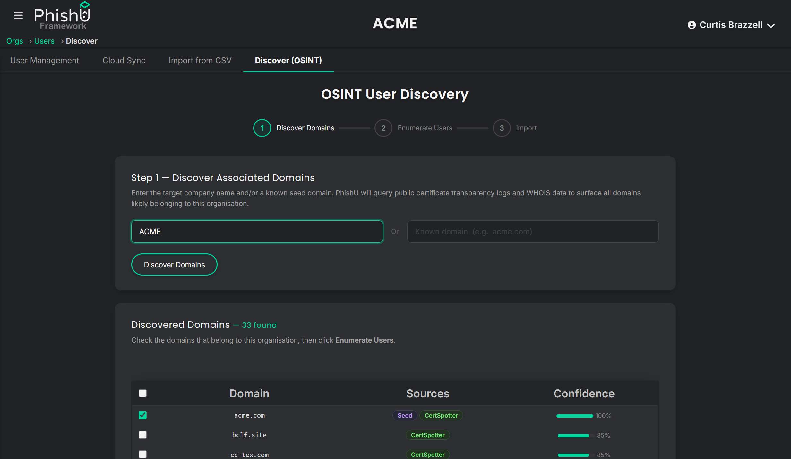

Many authorized phishing engagements start with the same problem: there is no usable target list yet. The landing page can be ready. The email can be ready. The reporting and training workflow can be ready. But the operator still has to figure out who actually works at the target organization before the first campaign can go out.
That gap is especially painful in red team and pentest work. A client may want a realistic black-box assessment, but may not want to hand over a full directory on day one. Open-source tooling usually leaves this part outside the platform. The operator ends up juggling spreadsheets, one-off recon scripts, separate enrichment tools, and manual imports before the phishing work even really starts.
The PhishU Framework now closes that gap with built-in OSINT email reconnaissance. Under the Users section, the operator can discover associated domains, enumerate public employee addresses from multiple sources, and import selected users directly into Org Users without leaving the platform.

The Workflow Starts With Associated Domains
The first step is not guessing email addresses. It is figuring out which domains belong to the organization in the first place. The current workflow uses a company name and/or seed domain, then checks certificate transparency data, CertSpotter, and Wikidata to surface likely associated apex domains. That gives the operator a much better starting point than assuming the target only uses one obvious domain.
That detail matters in real assessments. A client might use one public corporate domain, a different mail domain, a regional domain, a holding-company domain, or several domains that never show up in a simple homepage glance. If the platform can surface those early, the rest of the discovery pass gets more useful fast.
Then the Framework Enumerates Public Employee Addresses
Once the operator confirms which domains belong to the organization, the Framework moves into user enumeration. The current flow uses public sources like GitHub commit metadata and certificate transparency email artifacts, then layers in paid enrichment where it improves coverage. Hunter.io is a major part of that path because it returns not just addresses, but often names, titles, and naming-pattern hints that help the operator understand how the directory is structured.
The important part is that this is not just a loose recon dump. The Framework deduplicates results against users already in the org, scores confidence, shows the source of each hit, and lets the operator choose which records should move forward.

Why the Multi-Tenant Platform Model Changes the Economics
This is where the hosted, centralized, multi-tenant model matters. Paid enrichment has real cost. The API integration work has real cost too. For one-off consulting engagements or open-source stacks, that cost usually gets pushed back onto the operator. They either skip the enrichment, pay for separate subscriptions, or burn time gluing tools together around the phishing platform.
The PhishU Framework is in a different position. Because the platform is centrally maintained and used across multiple orgs and customers, PhishU can justify wiring paid third-party enrichment directly into the workflow instead of treating recon as a separate product category. The operator does not have to build pagination, deduplication, domain discovery, and import logic on top of a basic phishing tool. It is already there.
That is a real advantage for pentest firms, MSSPs, and red teams. Margin gets better when billable time is not spent exporting CSV files from one tool just to re-import them into another. The value is not only that the data exists. The value is that the data lands directly in the place where the campaign work already happens.
Direct Import Matters More Than It Sounds
Recon is only useful if it becomes operational. In the PhishU Framework, the OSINT workflow does not end with a list on screen. The operator can select the discovered users and import them directly into Org Users, which is the same directory used by targeting, campaigns, follow-on workflow, and reporting.
That means the handoff is immediate. There is no separate cleanup cycle. No extra spreadsheet normalization. No sidecar database. No custom import script just to make the phishing platform aware of the people that were just discovered.

OSINT Complements the Existing White-Box Options
This does not replace the other ways the Framework builds a target directory. For white-box or customer-assisted work, PhishU still supports cloud directory sync from Microsoft Entra and Google Workspace, plus straightforward CSV import when the client already has a clean user list.
The difference is that the platform now covers both sides of the engagement model. If the client is comfortable sharing a directory, sync it. If they want to stay black-box longer, use OSINT discovery. If they just want to upload a list, use CSV. The important part is that all three paths feed the same downstream campaign workflow instead of forcing the operator to switch tools or rebuild the directory each time.
One Platform, Not a Recon Sidecar
This is the broader story. The PhishU Framework is not just trying to be the place where the email gets sent. It is the place where the assessment gets built. The target list can start there. The landing page can start there. The email can start there. The monitoring, training, and report can finish there. That is what makes the platform useful to practitioners running real phishing engagements instead of just demoing isolated features.
For red teams and pentest firms, OSINT email recon makes the platform more self-contained. For MSSPs, it makes managed phishing work easier to repeat across customers. For internal security teams, it provides another option when the official directory is incomplete, stale, or not yet connected. In every case, the outcome is the same: less glue work, faster time to a realistic campaign, and fewer reasons to leave the Framework for outside tools.
Want to see OSINT email recon used in an authorized phishing assessment?
The PhishU Framework can now discover associated domains, enumerate public employee addresses, import selected users directly into Org Users, and carry that directory straight into the rest of the phishing workflow. No separate recon tool chain required.
Contact Us